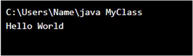

-
자바 언어 소개
객체 지향 프로그래밍 언어로서 보안성이 뛰어나며 컴파일한 코드는 다른 운영 체제에서 사용할 수 있도록 클래스(class)로 제공된다. 객체 지향 언어인 C++ 언어의 객체 지향적인 장점을 살리면서 분산 환경을 지원하며 더욱 효율적이다. [네이버 지식백과] 자바 [Java] (컴퓨터인터넷IT용어대사전, 2011. 1. 20., 전산용어사전편찬위원회)
-
자바의 역사/발전과정
1. JPE (1998년 5월)
JPE 프로젝트 선언
2. J2EE 1.2 (1999년 10월 12일)
엔터프라이즈 자바빈즈 (EJB), 버전 1.1
자바 서버 페이지 (JSP), 버전 1.1
자바 서블릿, 버전 2.2
JDBC API, 버전 2.0
JNDI, 버전 1.2
자바 메시지 서비스 (JMS), 버전 1.0.2
자바 트랜잭션 API (JTA), 버전 1.0.1
자바 트랜잭션 서비스 (JTS), 버전 0.95
자바 메일 API 버전 1.1
JAF (JavaBeans Activation Framework), 버전 1.0
3. J2EE 1.3 (2001년 9월 24일)
엔터프라이즈 자바빈즈 (EJB), 버전 2.0
자바 서버 페이지 (JSP), 버전 1.2
자바 서블릿 , 버전 2.3
JDBC API, 버전 2.1
JNDI , 버전 1.2
자바 메시지 서비스 (JMS), 버전 1.0.2
자바 트랜잭션 API (JTA), 버전 1.0.1
자바 트랜잭션 서비스 (JTS), 버전 1.0
자바 메일 API 버전 1.1
JAF (JavaBeans Activation Framework), 버전 1.0
JCA, 버전 1.0
JAXP , 버전 1.0
JAAS , 버전 1.0
4. J2EE 1.4 (2003년 11월 11일)
엔터프라이즈 자바빈즈 (EJB), 버전 2.1 자바 서버 페이지 (JSP), 버전 2.0 자바 서블릿, 버전 2.4 JDBC API, 버전 3.0 JNDI , 버전 1.2 자바 메시지 서비스 (JMS), 버전 1.1 자바 트랜잭션 API (JTA), 버전 1.0.1B 자바 트랜잭션 서비스 (JTS), 버전 1.0 자바 메일, 버전 1.2 JAF (JavaBeans Activation Framework), 버전 1.0 JCA, 버전 1.5 JAXP (JAXP), 버전 1.2 JAAS (JAAS), 버전 1.0 Java Authorization Service Provider Contract for Containers (JACC), 버전 1.0 웹 서비스 for J2EE, 버전 1.0 JAX-RPC (JAX-RPC), 버전 1.0 JAXR (JAXR), 버전 1.0 JMX (JMX), 버전 1.1 Java 2 Platform, Enterprise Edition Management Specification, 버전 1.0 Java 2 Platform, Enterprise Edition Deployment Specification, 버전 1.0
5. Java EE 5 (2006년 5월 11일)
엔터프라이즈 자바빈즈 (Enterprise Java Beans, EJB), 버전 3.0
자바 퍼시스턴스 API (Java Persistence API, JPA), 버전 1.0
자바 서버 페이지 (Java Server Pages, JSP), 버전 2.1
자바 서블릿 (Java Servlet), 버전 2.5
자바 서버 페이스 (Java Server Faces, JSF), 버전 1.2
자바 서버 페이지 표준 태그 라이브러리 (Java ServerPages Standard Tag Library, JSTL), 버전 1.2
JDBC (Java DataBase Connectivity, JDBC) , 버전 3.0
JNDI (Java Naming and Directory Interface, JNDI), 버전 1.2
자바 메시지 서비스 (Java Message Service, JMS), 버전 1.1
자바 트랜잭션 API (Java Transaction API, JTA), 버전 1.1
자바 트랜잭션 서비스 (Java Transaction Service, JTS), 버전 1.0
자바 메일 (JavaMail) , 버전 1.4
JAF (JavaBeans Activation Framework), 버전 1.1
JCA (J2EE Connector Architecture, JCA), 버전 1.5
JAXP (Java API for XML Processing, JAXP), 버전 1.3
JAAS (Java Authentication and Authorization Service, JAAS), 버전 1.0
JACC (Java Authorization Service Provider Contract for Containers, JACC), 버전 1.1
Java EE용 웹서비스, 버전 1.2
JAX-RPC (Java API for XML-based RPC, JAX-RPC), 버전 1.1
JAXR (Java API for XML Registries, JAXR), 버전 1.0
JMX (Java Management eXtensions, JMX), 버전 1.2
Java Platform, Enterprise Edition Management Specification, 버전 1.1
Java Platform, Enterprise Edition Deployment Specification, 버전 1.1
JAX-WS (Java API for XML-based Web Services, JAX-WS), 버전 2.0
JAXB (Java Architecture for XML Binding, JAXB), 버전 2.0
SAAJ (SOAP with Attachments API for Java, SAAJ), 버전 1.3
Web Services Metadata for the Java Platform, 버전 2.0
StAX (Streaming API for XML, StAX), 버전 1.0
6. Java EE 6 (2008년)
JSR-196 Java Authentication SPI for Containers
JSR-236 Timer for Application Servers
JSR-237 Work Manager for Application Servers
JSR-299 Web Beans
JSR-311 JAX-RS: Java API for RESTful Web Services
-
자바의 특징
1. Java works on different platforms (Windows, Mac, Linux, Raspberry Pi, etc.)
2. It is one of the most popular programming language in the world
3. It is easy to learn and simple to use
4. It is open-source and free
5. It is secure, fast and powerful
6. It has a huge community support (tens of millions of developers)
7. Java is an object oriented language which gives a clear structure to programs and allows code to be reused, lowering development costs
8. As Java is close to C++ and C#, it makes it easy for programmers to switch to Java or vice versa
[w3scholls.com 사이트 참조] -
자바 기본형
public class MyClass {
public static void main(String[] args) {
System.out.println("Hello World");
}
}
result
